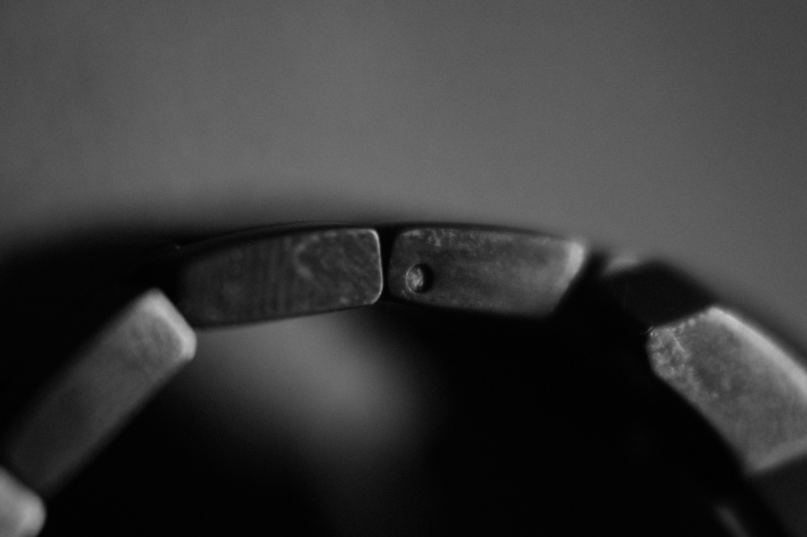

Photos · 2025-07-10
Twelve Abstracts
A study in form, texture, and light — twelve frames with no subject but themselves.
Twelve Abstracts strips the photograph down to its raw materials. No faces, no places — just the way light falls across a surface and the shapes that fall out of it.
The series began as an exercise in looking closely: holding the camera still long enough that the ordinary turned unfamiliar. What reads as a landscape in one frame is a few inches of texture in the next.
How to read it
There is no order to enforce. Move through the twelve however your eye wants to — each frame is meant to stand on its own, and to rhyme quietly with the others.


